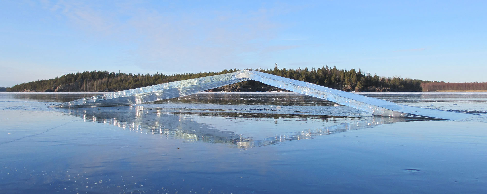
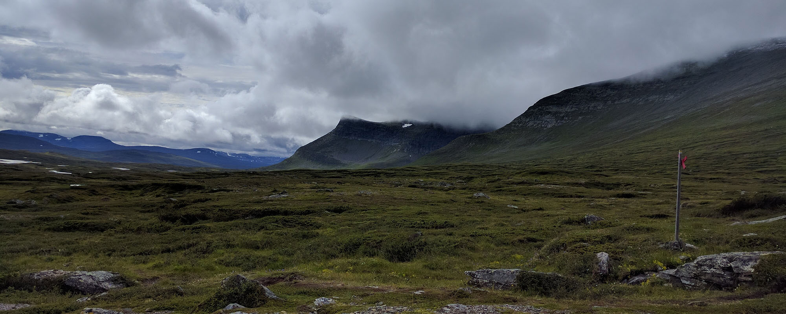

<link rel="import" href="../bower_components/polymer/polymer.html">
<link rel="import" href="../bower_components/paper-card/paper-card.html">
<link rel="import" href="../bower_components/google-youtube/google-youtube.html">
<link rel="import" href="/elements/my-left-image-paper-card.html">
<link rel="import" href="/elements/my-news-container.html">
<link rel="import" href="/elements/my-fancy-list.html">

<link rel="import" href="shared-styles.html">

<dom-module id="ng-home">
    <template>
        
        <style is="custom-style" include="shared-styles">
            .slider {
                margin-bottom: 16px;
            }

            .caption {
                text-shadow: 0 0 0.4em #000;
            }

        </style>


        <div class="slider">
            <ul class="slides">
                <li>
                    <a href="/adventures/skating">
                        
                        <div class="caption left-align">
                            <h3>Nordic Skating</h3>
                            <h5 class="light grey-text text-lighten-3">Fantastic skating on the lakes of Sweden</h5>
                        </div>
                    </a>
                </li>
                <li>
                    <a href="/adventures/kayak">
                        
                        <div class="caption right-align">
                            <h3>Kayak</h3>
                            <h5 class="light grey-text text-lighten-3">Paddle amoung the islands of the Swedish arcepelago</h5>
                        </div>
                    </a>
                </li>
                <li>
                    <a href="/adventures/skiing">
                        
                        <div class="caption left-align">
                            <h3>Cross country skiing</h3>
                            <h5 class="light grey-text text-lighten-3">Here's our small slogan.</h5>
                        </div>
                    </a>
                </li>
                <li>
                    <a href="/adventures/hiking">
                        
                        <div class="caption right-align">
                            <h3>Hiking</h3>
                            <h5 class="light grey-text text-lighten-3">Walk in the wilderness of northern Sweden</h5>
                        </div>
                    </a>
                </li>
            </ul>
        </div>

        <my-news-container>

            <my-left-image-paper-card image="../images/500/happy_w001.jpg">
                <div class="card-content">
                    <h1>Adventure Tours in Sweden</h1>
                    <p>Join us on our tours. We have gathered our best outdoor experiences and are now offering all inclusive
                        guided tours. We offer tours for small groups where we tailor each tour after the interests and wishes
                        of the participants.
                    </p>
                </div>
                <div class="card-actions">
                    <a href="/adventures/main">
                        <paper-button>Read about our activities</paper-button>
                    </a>
                </div>
                <div class="card-actions">
                    <a href="/info">
                        <paper-button>Some other useful information</paper-button>
                    </a>
                </div>
            </my-left-image-paper-card>

            <paper-card>
                <div class="card-content">
                    <h1>They write about our skating trips:</h1>
                    <p class="lead">There are several articles about skating in Sweden. The most recent articles you found here.</p>

                    <my-fancy-list header="The guardian 25 Oct 2013" image="../images/100/guardian003.jpg" link="http://www.theguardian.com/travel/2013/oct/25/skating-on-sea-ice-in-sweden?INTCMP=SRCH">
                        <p>John Savelid is waiting for me at Stockholm airport holding a strange bag that looks like a rucksack
                            with too many straps. "It's a day sack for skating," he tells me, "but also a life jacket in
                            case you go through."</p>
                    </my-fancy-list>

                    <my-fancy-list header="The Independent 24 Nov 2013" image="../images/100/independent001.jpg" link="http://www.independent.co.uk/travel/europe/sweden-go-with-the-floe-this-winter-8959544.html">
                        <p>It was the question on all of our minds, but I asked it: "How do you know when the ice isn't safe
                            to skate on?" Niklas, our imperturbable guide, rubbed his chin, looked thoughtful for a moment,
                            then offered up the distilled wisdom of a lifetime spent playing around on frozen water. "When
                            it breaks," he said with a broad smile.</p>
                    </my-fancy-list>

                    <my-fancy-list header="Sunday Times 10 Nov 2013" image="../images/100/sundaytimes001.jpg" link="http://www.thesundaytimes.co.uk/sto/travel/Holidays/Active/article1337371.ece">
                        <p>We had skated just over six miles when we reached the edge. The ice just stopped, and the liquid
                            version of the Baltic Sea stretched out to the horizon. I hadn’t expected this sudden, ­unnerving
                            divide. I hadn’t expected to be so far from land. And I hadn’t ­expected to be told that the
                            solid surface I was standing on was only 3in thick.</p>
                        <p>Full article <a href="http://www.naturguiden.com/component/content/article/28-news/news/69-sunday-times-10-nov-2013">SundayTimes.jpg</a></p>
                    </my-fancy-list>

                    <my-fancy-list header="4-seasons (German)" image="../images/100/4seasons001.jpg" link="http://4-seasons.de/magazinartikel/tour-skaten-auf-kufen-durch-die-schwedische-eislandschaft-0#gefuehrt">
                        <p>Glückliches Schweden: Wenn Seen, Flüsse und Küsten gefrieren, entsteht das schönste Schlittschuh-Revier
                            der Welt. Beim Tour-Skaten gleitet man mit Rucksack und Proviant durch die nordische Einsamkeit,
                            50 Kilometer täglich sind kein Problem.</p>
                    </my-fancy-list>

                    <my-fancy-list header="Irish Times" image="../images/100/skating001.jpg" link="http://www.irishtimes.com/newspaper/travel/2012/1110/1224326201570.html">
                        <p>I take my first steps out on to the frozen waters of the Baltic and my legs lock with fear. All that
                            practice on the Christmas rink feels like a futile flirtation as my Swedish guide gently urges
                            me to put my trust in the long metal “tour skating” blades and slide.</p>
                    </my-fancy-list>

                    <my-fancy-list header="The Guardian Nov 2009" image="../images/100/guardian001.jpg" link="http://www.theguardian.com/travel/2012/nov/09/european-winter-breaks-with-twist">
                        <p>Escape the circle-skating crowds at Somerset House and ice-skate with a sense of purpose on a four-day
                            trek through south-eastern Sweden's vast network of frozen lakes, with Nature Travels. The trip
                            involves ice-fishing and, if conditions allow, moon-skating.</p>
                    </my-fancy-list>

                    <my-fancy-list header="The Guardian Oct 2012" image="../images/100/guardian002.jpg" link="http://www.guardian.co.uk/travel/2012/oct/21/holiday-tips-skating-sweden-christmas-cottages-deals">
                        <p>The skating season is almost upon us, but if the thought of jostling for elbow room with kamikaze
                            teens and boozed-up office workers on a synthetic rink leaves you cold, check out the new wild-skating
                            trip from Swedish tour operator Nature Travels.</p>
                    </my-fancy-list>

                    <my-fancy-list header="The Southern Star" image="../images/100/southernstar001.jpg" link="http://www.naturguiden.com/pdf/southern_star_2012.pdf">
                        <p>I am in the middle of a Swedish lake watching winter melt away. The snow has gone and birch trees
                            which cover surrounding islands are starting to bud. I should be worried, given that I am standing
                            on ice, about three kilometres from land, and cracks are literally forming all around me, creating
                            a thudding noise which reverberates across the bay, and through my body.</p>
                    </my-fancy-list>

                </div>
            </paper-card>

            <paper-card>
                <div class="card-content">
                    <h1>Inspiration</h1>
                    <p class="lead">A nice video from one of our guest. Coming here for Nordic skating 2015</p>
                </div>
                <google-youtube video-id="b5CztALMDsU" fluid chromeless rel="0" start="5" autoplay="0">
                </google-youtube>
            </paper-card>

        </my-news-container>

    </template>

    <script>
    Polymer({
        is: 'ng-home',

        properties: {

        },
        ready: function(){
            var slider = Polymer.dom(this.root).querySelector('.slider');
            $(slider).slider({full_width: true});

            var parallax = Polymer.dom(this.root).querySelector('.parallax');
            $(parallax).parallax();
        }
    });

    </script>

</dom-module>